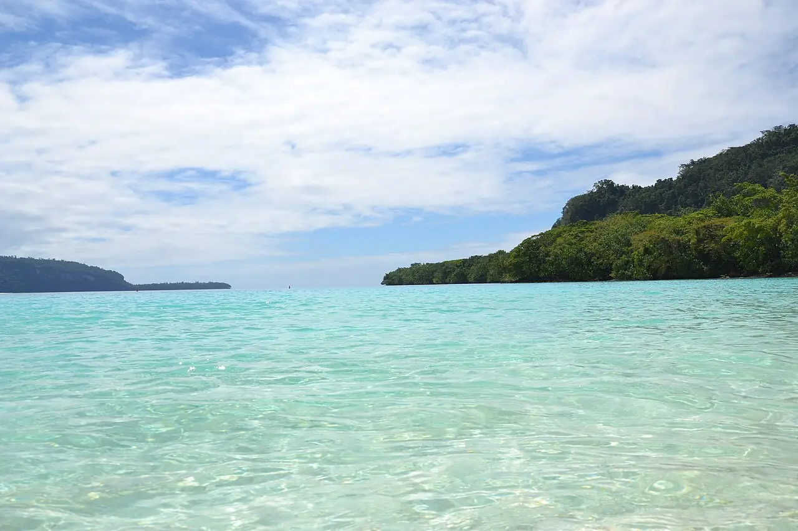

Champagne Beach
Espiritu Santo, Vanuatu · baignade, snorkeling

Anse de sable blanc et d’eau turquoise sur la côte est d’Espiritu Santo, près de Hog Harbour. Elle doit son nom aux petites bulles d’origine volcanique qui remontent parfois du sable à marée basse.
- Lieu
- Espiritu Santo, Vanuatu
- Niveau
- Débutant
- Activités
- baignade, snorkeling
- Type d'eau
- Mer / océan
- Coordonnées
- -15.14, 167.12 (position approximative du secteur)
Dangers à connaître
- Soleil très fort et peu d’ombre au bord de l’eau.
- Corail sur les côtés de l’anse : chaussures d’eau utiles.
Le conseil d'Ocean Buddy
Évite les jours d’escale des paquebots, et prévois le droit d’accès demandé par les propriétaires coutumiers.
Ouvrir dans Ocean Buddy Télécharger sur l'App Store
Source : Fiche Ocean Buddy · septembre 2026 · à vérifier localement.